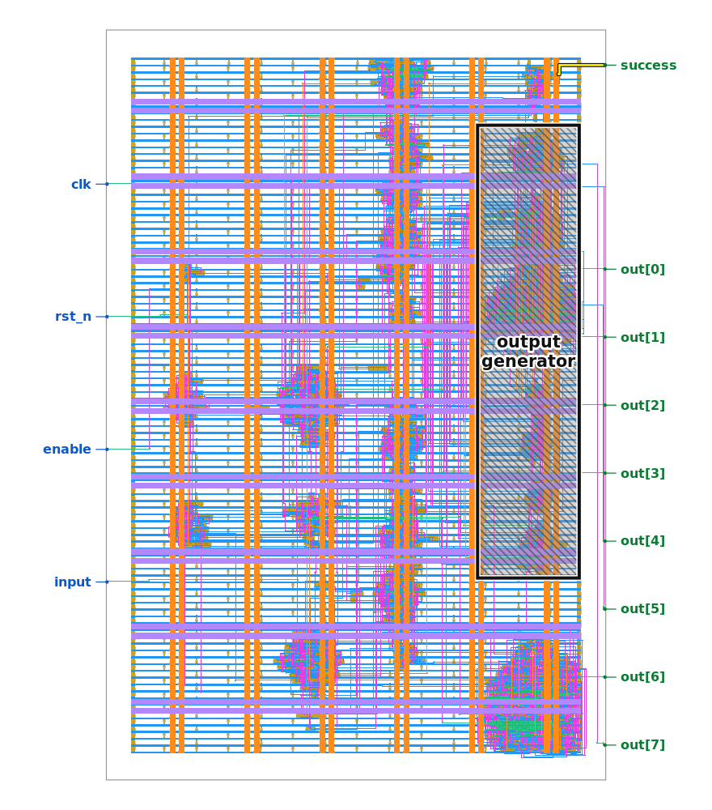

Reverse-engineering the Jane Street 2026 ASIC puzzle
ROMance in Jane Street, Per arenam ad astra
September 2026 · code · the puzzle
Jane Street published a chip layout (a GDS file) with one input bit I, an 8-bit output
O, a success flag, and a hint image. The question: what do you feed I to
make success go high?
Disclaimer: I'm sadly really late to this. I just found out about the challenge today :( so this is a one-day run at it. Below is the writeup I submitted, then some things I dug up afterwards.
AI disclosure: after I had the solution, I used Grok 4.6 on high to help me make the diagrams below and write the code in the repo.
Short
- GDS → KLayout
LayoutToNetlist(metal → wires) - → custom pin-attach (wires → cell pins) → unlabeled netlist
- → simplify (drop filler, collapse buffers)
- → replay
example_inputs.vcd(verify; notice the 121-clock frame) - → cluster by physical locality (MST), with the shaded output generator seeded as its own cluster to ignore
- → probe / brute-force small clusters (canned phrases; success contract)
- → SAT on the full netlist (
success=1after 121 clocks) - → replay →
(* TWO STARS *)
Long
I'm not really a circuits person, and I knew very little about them coming into this. After doing the warmup and
learning a bit about these file types, I figured GDS wasn't a very useful format for my purposes. I'd need to
extract a netlist from it before I could simulate anything with the tools suggested. I was hoping this was already
a solved problem, so I looked for a program that did it and found LayoutToNetlist in KLayout. I used
that to group the metal into wires, then wrote some custom pin-attach code to finally get the netlist I needed.
I was sort of hoping that after all of that, the next section would be the easy part. LMAO.
I essentially reused the harness I'd built for the warmup: sweep inputs through the circuit and graph the outputs
in different ways to see if there was any pattern. I was hoping it would be a simple enough function that I could
deduce it from the data, extrapolate a rule, and figure out the secret code from there. I tried primes, random
samples, funny numbers, all kinds of things. Honestly, the only thing I learned at this stage (more of an
assumption that I ran with) was that you wouldn't get an output until the clock hit 121. I partially figured that
out by testing my circuit against the recording they provided (example_inputs.vcd).
At this point I went back and looked at the hints again. The shaded-region PNG started to worry me the more I thought about it. There was no reason to include that hint unless they wanted us to map sections of the GDS onto sections of the netlist and reverse engineer from there.

So I decided it would be helpful to cluster the circuit into individual components that would be easier to probe. Here I made a few assumptions. First: since they gave us a shaded region on a PNG and told us we didn't have to touch it, and that shading wasn't very precise, there was probably some leeway. I didn't need perfect clusters; it would probably still work out fine-ish. Second, just thinking about circuits: proximity is probably at least somewhat of a signal. If a lot of components are close together and wired directly to each other, they're probably contributing to some computation that might be simpler to understand, like it might be one abstract thing. That didn't feel like a crazy assumption. So I clustered: one component based on the shaded region, then an MST-based physical proximity clustering for the rest. That gave me a handful of components.
With my circuit pieces, I simplified each one individually to get smaller circuits. One component had few enough
inputs to brute-force. That gave me canned phrases (EMPTY SKY, BIG BANG,
TWO"NOT TOUCH). I read ur ROM.
The component driving success was also small. Exhausting its inputs told me what internal wires make
the checker fire. But those wires aren't I, they're deep inside the chip. So I SAT-solved the full
netlist: given 121 clock cycles (also sort of a guess, but the evidence supported it), which input bitstream makes
success=1? One answer. Replayed it: (* TWO STARS *).
Then, like an idiot, I realized 121 is a grid, not a number length.
Spent some time after that just messing around and finding more things. Also finally noticed layer 200 had Morse code the whole time. Missed it until after I'd solved.
Stuff I found afterwards
Everything here (except the BooFun bit at the end) comes out of python solve.py in the repo (about
25 s, needs KLayout and z3-solver). None of this was necessary.
It's a Star Battle

So the chip is checking an 11×11 Star Battle
("Two Not Touch"): two stars per row, two per column, two per region, and no two stars touching, not even
diagonally. Nobody gives you the regions. They're just baked into the logic. But you can read them back out. Two
of the tiny blobs turned out to be 4-bit counters: g0 cycles 0..10 every clock and g1
ticks once every 11 clocks, which is just the (column, row) of whichever bit is arriving on I. Both
feed a 147-cell blob of pure logic (g9, no flops at all) whose 4-bit output only depends on that
position, and it takes exactly 11 different values over the 121 cells. That's the region map above. 11 connected
regions, and the winning board puts exactly two stars in each. Honestly this was my favorite find.
How I actually read it: simulate the load phase one clock at a time and, before each edge, write down the 8
counter flops and the 4 wires going from g9 into g6. The counters decode as plain
binary 0..10 (bits in a scrambled order). The 4 wires are the same on every clock whether you feed the winning
board, all zeros, or all ones, so they only depend on the position. Then a sanity check that this is really the
map the chip uses: on 120 random boards, g6's 22 flops came out as a pure function of the per-region
star counts under this map, and g7's as a pure function of the per-column counts (each saturating at
3, so 2 bits each, 11 × 2 = 22).
What the blobs turned out to be
The clustering (10 µm single-linkage on cell position, plus the drawn box for the hatched block) gave me 12 blobs out of 695 logic cells. After poking at each one:
| blob | cells | flops | what it is |
|---|---|---|---|
output_generator | 224 | 13 | the printer: row mux, 4-bit character counter, 8-bit LFSR |
g9 | 147 | 0 | region lookup: (row, col) → region id, no state |
g6, g7 | 96 each | 22 each | tallies: stars per region (g6) and per column (g7); 11 × 2 bits, each count saturating at 3 |
g4 | 39 | 8 | folds the region tallies into the empty / full flags and a "regions OK" wire |
g3 | 33 | 13 | 12 of its flops are I delayed 1..12 clocks: the cell to the left and the row above. With the column tallies, that's the row/column check and the touching check |
g5 | 18 | 3 | running star count for the current row (saturating at 3) |
g0, g1 | 14, 17 | 4 each | column counter (0..10) and row counter (0..10) |
g10 | 8 | 2 | AND-reduce to success; also owns the sticky touching flag |
g2 | 3 | 1 | the enable strobe everyone gets, plus one wire into g10 that goes high only once both counters have wrapped, i.e. exactly 121 bits went in |
Here's how they're wired, straight from the netlist (I left out clock, reset, and the g2 strobe
since it goes everywhere):
flowchart TB I([I, 121 bits]) --> G6 & G7 & G3 & G4 & G5 & OG EN([enable]) --> G2[g2
load strobe + frame done] G0[g0
column counter] -->|wrap every 11| G1[g1
row counter] G0 & G1 -->|wraps| G2 G0 & G1 --> G9[g9
region lookup] G0 --> G7 & G5 G9 -->|region id| G6[g6
region tallies, 22 flops] G7[g7
column tallies, 22 flops] --> G3 G6 --> G4 G5[g5
row count] --> G3 & OG G3[g3
row/col + touching check] --> G10 G4[g4
empty / full / regions OK] --> G10 & OG G2 -->|121 bits in| G10 G10[g10
AND-reduce] -->|success, touching, 1 timing| OG OG -.->|2 wires back| G10 G10 --> S([success]) OG[output generator
printer + LFSR] --> O([O 7:0])
g10 is the "success contract" from the short version: 6 wires in (two from g3, one
each from g4 and g2, two from the printer), 64 cases to try, and success
needs 5 specific ones high. The g2 wire is the one that enforces the 121-clock frame I'd guessed at:
load 100 bits and it never goes high. The SAT over all 695 cells (121 load clocks + 8 hold clocks in z3) finds the
board in about 4 s. I tried dropping the printer to make the problem smaller and it went unsat, which confused me
until I looked at the two dashed wires: one of them is just an AND gate that happens to sit inside the hatched box
(more on that below), and g10 needs its output.
The printer encrypts the flag
This is the part that confused me the longest. I cut the printer out, drove it with the exact bus the rest of the
chip fed it, and it said the same thing the whole chip said, so the cut was honest. Nine wires come in. Two are
timing (the load strobe, and one that rises the clock after enable drops), one has no driver at all,
four pick which row of text to print, and the last two don't touch the printer at all: they go through a single
AND gate that happens to live inside the hatched box and come straight back out to g10. That AND is
one of the five things success needs.
flowchart LR I([I, 121 bits]) -->|1 tick per bit| LFSR[8-bit LFSR
x^8+x^4+x^3+x^2+1 = 0x1D
CRC-8 SAE-J1850, seed 00001111] REST[rest of the die] --> F1[empty] & F2[full] & F3[touching] & F4[success] REST -->|one wire each from g5 and g4| AND((AND)) -->|back to g10| G10([g10]) F1 & F2 & F3 & F4 --> SEL{priority
row select} EN([enable drops]) --> CNT[4-bit character counter
one byte per clock] CNT --> SEL SEL -->|empty| R1[EMPTY SKY] SEL -->|full| R2[BIG BANG] SEL -->|touching| R3[TWO#quot;NOT TOUCH] SEL -->|none| R4[TRY AGAIN] SEL -->|success| R5[stored bytes
4d ad fb 83 13 79 ...] R5 --> X((XOR)) LFSR -->|8 ticks per byte
65 87 db d7 ...| X R1 & R2 & R3 & R4 & X --> O([O 7:0])
Left to right: while enable is high, every I bit gets shifted into the LFSR, and
meanwhile the rest of the chip is deciding which of five rows to point at. I tried all 64 combinations of the
six non-timing wires during the print phase, and the select is a strict priority: empty beats full beats
success beats touching, and nothing set means TRY AGAIN (the two pass-through wires
change nothing). When enable drops, a 4-bit binary counter walks the row one byte per clock. Four
rows go straight to O. The fifth one gets XORed with the LFSR, which keeps ticking 8 times per byte.
Force success high on a wrong board and you get garbage (f7 8c 4a 64 ...). Only the
right board makes the keystream that decrypts it:
stored 4d ad fb 83 13 79 1c b5 79 63 c7 68 93 f5 8f
keystream 65 87 db d7 44 36 3c e6 2d 22 95 3b b3 df a6 <- winning board
XOR 28 2a 20 54 57 4f 20 53 54 41 52 53 20 2a 29 "(* TWO STARS *)"
The LFSR isn't random either. 7 of its 8 flops are a plain shift and one is the feedback XOR plus the incoming
I bit. Characteristic polynomial x8 + x4 + x3 + x2 + 1
= 0x1D, which is the CRC-8 SAE-J1850 polynomial, seeded 00001111 from the reset values.
So the flag row is a little stream cipher keyed by a CRC-8 of the board. I tried all 256 key states and exactly one
decrypts to text. This is also why my constant-address sweep of the printer found the four consolation rows and
never the flag: the flag's address is the whole 121-bit board. success opens the row, the board is the
key.
I double-checked the constants by hand, outside the simulator. Iterating those 8 update rows from
00001111 over the 121 winning bits lands on 00101110, the register the chip has after
loading. A textbook bit-serial CRC-8 with polynomial 0x1D over the same bits gives the same register
(up to which flop is which bit), and 0x1D is the only common CRC-8 polynomial the update matrix
satisfies. Each keystream byte is just that register read out in a fixed bit order after 8 more ticks
(00101110 in that order is 0x65, the first byte), and stored XOR keystream
really is (* TWO STARS *).
Checking it with BooFun
Since I had BooFun lying around, I pointed it at the two pieces of the printer that are just Boolean functions. Probe the isolated printer to get the truth tables, then:
import boofun
f = boofun.create(next_state_bit) # 9 inputs: the 8 register flops + I
f.is_linear(), boofun.gf2_monomials(f) # True, [{dfstp_2_2}] ... or [{4 flops, I}]
g = boofun.create(prints_this_row) # 6 inputs: the six non-timing wires
g.influences(), g.is_junta(4)
The 8 next-state bits of the register all come back is_linear() == True; 7 of them are dictators (one
input each, the shift) and the eighth has GF(2) monomials {dfrtp_2_33, dfrtp_2_35, dfstp_2_1, dfstp_2_3, I},
the 4-tap feedback plus the incoming bit. For the row select, the two pass-through wires have influence exactly
0 on every row and each row indicator is a 4-junta of the flag wires. The GF(2) degrees read out the priority
chain directly: EMPTY SKY is degree 1 (a dictator on n791), BIG BANG degree 2,
the encrypted row degree 3, and TWO"NOT TOUCH / TRY AGAIN degree 4.
Easter eggs
| what | where |
|---|---|
EMPTY SKY | I is all zeros |
BIG BANG | I is all ones |
TRY AGAIN | default / junk boards (e.g. 1010...) |
TWO"NOT TOUCH | two stars per row and column, but two of them touch (the " is stored, one bit off a space) |
(* TWO STARS *) | official win line; stored encrypted, XOR'd with CRC-8 of the board |
VCD $date | Sat Dec 31 23:59:60 2016 (a leap second) |
VCD $version | "Leave no stone unturned! But for this file, consider looking at it in a waveform viewer instead." |
VCD I as 7-bit ASCII | each 11-bit row, first 7 bits LSB-first → The night sky awaits |
| GDS layer 200 Morse | PER ARENAM AD ASTRA |
| region map | three blobs spell JSC (Jane Street Capital): mint J, peach S, tan C |
| Warmup | success when A + B == 496 (a perfect number) |
What I'd tell myself at the start
-
Cluster first or simplify first? Doesn't matter. Honestly, on this die I checked both orders
and got the same blobs and the same cuts. What the clustering actually bought me was small cuts I could exhaust
(
g10: 6 wires, 64 tries) and a clean line around the printer. - A frozen bus lies. My first printer sweep held the nine cut wires constant for 121 clocks and got nothing. Two of them are timing strobes that have to move. Record the real waveform, replay it.
- Read the ROM, then notice what it won't say. The plain rows leak through any cut. The one row that never shows up under any constant address is the one encrypted with the answer.
- SAT on the whole thing was fine. 695 cells × 129 clocks unrolls in seconds. All the component work was for me to understand it, not for z3.
- Read the hints. All of them. Layer 200 was sitting there in Morse the entire time.